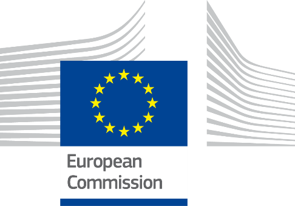
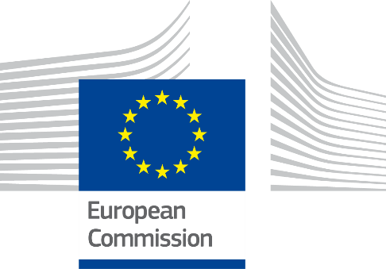
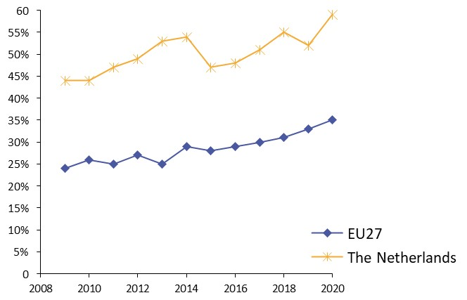
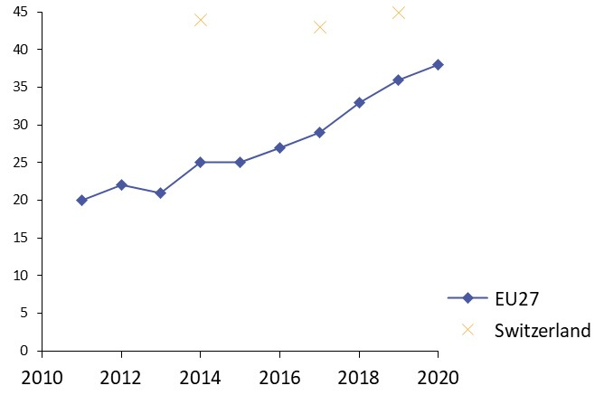
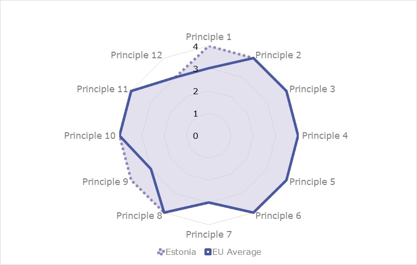

Digital Public Administration factsheet 2021
Finland
Digital Public Administration factsheet 2022
Table of Contents
2 Digital Public Administration Highlights 10
3 Digital Public Administration Political Communications 13
4 Digital Public Administration Legislation 22
5 Digital Public Administration Governance 28
6 Digital Public Administration Infrastructure 32
7 Cross-border Digital Public Administration Services for Citizens and Business 44
Country
Profile
1
Country
Profile
1
Country Profile
Digital Public Administration Indicators
The following graphs present data for the latest Digital Public Administration Indicators for Finland compared to the EU average. Statistical indicators in this section reflect those of Eurostat at the time the Edition is being prepared.
Percentage of individuals using the internet for interacting with public authorities in Finland | Percentage of individuals using the internet for obtaining information from public authorities in Finland |
Percentage of individuals using the internet for downloading official forms from public authorities in Finland | Percentage of individuals using the internet for submitting completed forms to public authorities in Finland |
Interoperability State of Play
In 2017, the European Commission published the European Interoperability Framework (EIF) to give specific guidance on how to set up interoperable digital public services through a set of 47 recommendations. The picture below represents the three pillars of the EIF around which the EIF Monitoring Mechanism was built to evaluate the level of implementation of the EIF within the Member States. It is based on a set of 71 Key Performance Indicators (KPIs) clustered within the three main pillars of the EIF (Principles, Layers and Conceptual model), outlined below.
 Source: European Interoperability Framework Monitoring Mechanism 2021
Source: European Interoperability Framework Monitoring Mechanism 2021
Source: European Interoperability Framework Monitoring Mechanism 2021
Source: European Interoperability Framework Monitoring Mechanism 2021
Source: European Interoperability Framework Monitoring Mechanism 2021
eGovernment State of Play
The graph below presents the main highlights of the latest eGovernment Benchmark Report, an assessment of eGovernment services in 36 countries: the 27 European Union Member States, as well as Iceland, Norway, Montenegro, the Republic of Serbia, Switzerland, Turkey, Albania and Macedonia (referred to as the EU27+).
The study evaluates online public services on four dimensions:
- User centricity: indicates the extent to which a service is provided online, its mobile friendliness and its usability (in terms of available online support and feedback mechanisms).
- Transparency: indicates the extent to which governments are transparent about (i) the process of service delivery, (ii) policy making and digital service design processes and (iii) the personal data processed in public services.
- Cross-border services: indicates the extent to which users of public services from another European country can use the online services.
- Key enablers: indicates the extent to which technical and organizational pre-conditions for eGovernment service provision are in place, such as electronic identification and authentic sources.
The 2022 report presents the biennial results, achieved over the past two years of measurement of all nine life events used to measure the above-mentioned key dimensions. More specifically, these life events are divided between seven ‘Citizen life events’ (Starting a small claim procedure, Moving, Owning a car, Health measured in 2021, and Career, Studying, Family life, measured in 2020) and two ‘Business life events’ (Regular Business Operations, measured in 2021, and Business start-up, measured in 2020).
 Source: eGovernment Benchmark Report 2022 Country Factsheet
Source: eGovernment Benchmark Report 2022 Country Factsheet

Digital Public Administration Highlights
2
Digital Public Administration Highlights
Digital Public Administration Political Communications |
The Climate and Environment Strategy for the ICT Sector was published on 9 March 2021. This pioneering strategy proposes instruments that will reduce the carbon and environmental footprint of the ICT sector and help reap the benefits of digitalisation. More in general, it is to promote ecologically sustainable digitalisation and support the achievement of climate and environmental objectives.
As part of the Government Programme, a large-scale Digital Identity development project for the period of 2021–2023 has been established. This project aims to implement a new mobile phone based Digital Identity solution which will be issued by the Finnish Police.
- In 2021, the Government adopted a Cyber Security Development Programme. It is a concrete implementation plan on how to develop cyber security across sectors in the long term. It covers the years 2021–2030. There are four themes in the Programme: top-level competence, close collaboration, strong domestic cyber security industry and effective national cyber security capabilities.
Digital Public Administration Legislation |
A working group set by the Ministry of Justice has submitted its proposals for the general requirements on automated decision-making to be added to the Administrative Procedure Act (434/2003) in February 2022. A working group set by the Ministry of Finance has submitted its proposals for provisions for the development, implementation and monitoring of automated decision-making processes to be added to the Act on Information Management in Public Administration (906/2019) in March 2022. The proposals of the working groups will be coordinated into a joint legislative proposal during the year 2022.
The Open Data Directive has been transposed into national legislation in July 2021 by changes to the Act on Information Management in Public Administration (906/2019) and the enactment of two new acts, one on the reuse of research data (713/2021) and one on the reuse of data held by publicly owned companies (712/2021).
In February 2022, amendments to the Act on Broadband Construction Aid and its subordinate Government Decree entered into force. The amendments were made in order to ensure continued compliance with European Union state aid rules and the General Block Exemption Regulation.
| Digital Public Administration Governance |

Digital Public Administration Infrastructure |

Digital Public Administration Political Communications
3
Digital Public Administration Political Communications
Specific political communications on digital public administration
Berlin Declaration on Digital Society and Value-Based Digital Government
In December 2020, the Finnish government signed the Berlin Declaration on Digital Society and Value-Based Digital Government, thus re-affirming its commitment – together with other EU Member States – to foster digital transformation in order to allow citizens and businesses to harness the benefits and opportunities offered by modern digital technologies. The Declaration aims to contribute to a value-based digital transformation by addressing and strengthening digital participation and digital inclusion in European societies.
Strategy for Public Governance Renewal
In the framework of the Strategy for Public Governance and Services of Prime Minister Sanna Marin’s Government Programme, the Finnish government released in December 2020 its Strategy for Public Governance Renewal. This strategy will guide and enhance the renewal of public governance as a whole from 2020 to 2030. In particular, it seeks to strengthen good governance across the country and in both national languages and, more specifically, to improve digital accessibility and encourage wider use of plain language in administration. A consistent and determined renewal of governance as described in the strategy will streamline everyday services, ensure legal certainty in society, and create new opportunities for businesses and communities.
The direction and means of administrative reform were defined together with various administrative sectors, municipalities, civil society, researchers and numerous stakeholders to agree on the goals and future policies around public governance in the 2020s. The participatory process of preparing the strategy has therefore played an important role in strengthening cooperation between the State, municipalities and future welfare regions, and the interaction between governance and the rest of society, as well as in building a common understanding of the need and direction of public governance development.
The implementation actions of the Strategy for Public Governance Renewal in 2021–22 include networking projects, events and development work that foster the achievement of the goals set in the strategy and inspire dialogue between different actors, increasing the knowledge base through studies and analysis, and competence renewal through education and training.
Climate and Environment Strategy for the ICT Sector
Government Programme of Prime Minister Marin
On 2 September 2021, the government appointed a Ministerial Working Group on Advancing the Digital Transformation, the Data Economy and the Public Administration. More specifically, the group is responsible for guiding and directing the development of the public administration, the digital transformation, the data economy and the information policy at the government level, and coordinating the relating activities and situational awareness. The ministerial working group steers the development work of the Digital Compass, as setting a common national vision and goals for digitalisation and the data economy by 2030.
Open Government Action Plan
The IV Finnish Open Government Action Plan (2019–2023) emphasises openness and inclusion in three different dimensions: (i) openness as a shared value; (ii) a strong legal foundation for openness; and (iii) the continuous development of openness. These three themes were translated into the following commitments for the implementation phase:
- Sustainable openness by pervading all government actions and development measures;
- Implementation of the Open Government Strategy, which will determine the long-term direction and the objectives to be used as the basis for building future action plans;
- Creation of a Transparency Register that will offer citizens information on the parties that seek to influence decision-making;
- Commitment and measures on open data; and
- Enhancement of the use and skills of dialogue in the public sector.
The realisation of these commitments will be monitored and evaluated during the implementation of the plan and after its finalisation.
2018 Government Report to Parliament on Information Policy and Artificial Intelligence
In December 2018, the government submitted a report to Parliament on Information Policy and Artificial Intelligence, which highlighted several policy issues, with a particular focus on the ethics of information policy and artificial intelligence. This report marked the beginning of a new and more cohesive policy response to Digital Public Administration.
The Parliament approved the report in March 2019 with four statements. In this context, the Parliament obliged the government to continue its work on the ethics of information policy and artificial intelligence, and to formulate them in more concrete terms. The Parliament also required the government to take the necessary actions to increase citizens’ understanding of digitisation and artificial intelligence, and strengthen the human competence in these matters at different educational levels and in different scientific branches.
Interoperability
Government Resolution for Opening up and Using Public Data
Key enablers
Access to public information
Act on the Openness of Government Activities
The Ministry of Justice will update the Act on the Openness of Government Activities according to the Government Programme to extend its application to data and information more broadly. The aim is a more viable and clearer legislation that will promote the transparency of society and meet the requirements of a modern society structure.
In January 2021, the Ministry of Justice set up a working group whose term extends to June 2023. The task of the working group is to assess and clarify the possible issues relating to the current legislation and provide solutions as well as to analyse whether the scope of the current legislation is up to date and sufficient, particularly considering the changes in the structure of the administration.
eID and Trust Services
Government Programme of Prime Minister Marin
The Government Programme aims to increase the digitisation ability of both the public and the private sectors, including by supporting new solutions to identify and manage the digital identity. The government will carry out a reform of personal identity codes, which in their current form were introduced in the 1960s and contain the holder’s date of birth and gender. As part of the reform, gender will no longer be specified in the personal identity code. The identity code reform will also make it possible for foreign citizens to remotely register a Finnish personal identity code in a trustworthy way to gain wider access to Finnish eServices.
As part of the Government Programme, a large-scale digital identity development project for the period 2021–2023 was established. This project aims to implement a new mobile phone-based digital identity solution, which will be issued by the Finnish Police. The digital identity will be implemented following the principles of self-sovereign identity (SSI), i.e. arranging the sharing of data in a human-centric way. The citizen should be able use the digital identity to prove his or her identity both in physical and in electronic authentication scenarios. The Finnish Digital Identity Wallet should be a cross-border compatible electronic identification (eID) mean, aligned with the standards derived from the upcoming EU Toolbox work for the European Digital Identity (EUDI) Wallet.
Security aspects
Government Resolution on Digital Security in the Public Sector
Published in April 2020, the Government Resolution on Digital Security in the Public Sector defines the principles of development and key services for advancing security in the digital environment. The resolution aims to protect citizens, communities and society from the risks and threats that may affect information, services and the functioning of society in the digital environment.
The government resolution and the Implementation Plan (Haukka 2020–2023) to advance its policies were prepared by an intersectoral coordination group set up by the Ministry of Finance. In the Implementation Plan, 19 tasks related to the key digital services were selected on the basis of national and international assessments. These tasks include (i) a national and international collaboration model for digital security in the public sector; (ii) the management of digital security risks in the public sector; (iii) shared services advancing digital security intended for the municipalities; (iv) the development of competences of citizens and staff; (v) the assessment of digital security of services and service provision in the public sector; (vi) the protection of the digital infrastructure needed for the authorities’ processes and services; and (vii) the secure development of autonomous and adaptive systems and services in the public sector.
Cybersecurity Strategy
- The 2019 Cybersecurity Strategy is based on the general principles of Finland’s 2013 Cybersecurity Strategy. The strategy and its implementation are also part of the implementation of the EU Cybersecurity Strategy.
- The strategy defines key national objectives for the development of the cyberenvironment and the safeguarding of related vital functions. It focuses on three areas: (i) international cooperation; (ii) better coordination of cybersecurity management, planning and preparedness; and (iii) development of cybersecurity competence.
- In addition, in 2021 the government adopted a Cybersecurity Development Programme. It is a concrete implementation plan on how to develop cybersecurity across sectors in the long term, covering the period 2021–2030. To that end, the programme deals with four themes: top-level competence, close collaboration, strong domestic cybersecurity industry and effective national cybersecurity capabilities.
Interconnection of base registries
Data Quality Framework
Public Administration API Principles
The Public Administration Application Programming Interface (API) Principles promote the provision and use of public sector information and functionalities primarily through APIs. The goal of the principles is to increase customer orientation, cooperation, semantic and technical interoperability, reusability, attention to information security and data protection, and quality in API development. The principles were prepared by the Ministry of Finance together with different stakeholders through an open and wide collaboration. The use of the principles will be supported by providing eTraining and networking activities for government agencies.
eProcurement
National Public Procurement Strategy
The strategy contains eight strategic common goals and 25 objectives implementing them. The strategic development focuses on strategic management and the promotion of procurement skills, with information management and impact assessment supporting strategic management. At the heart of the development work is the acquisition of functional and high-quality products and services so that all parties are involved in the process, the market is vibrant and innovation can be generated as part of public procurement. Through the development of these elements, public procurement can achieve economic, social and ecological sustainability.
As of spring 2022, the strategy was progressing according to plan. Nearly 30 measures, including measures to promote green and low-carbon procurement, information management and digitisation, innovative public procurement, employment through procurement, procurement expertise and the role of small- and medium-sized enterprises (SMEs) and human rights in procurement processes, had been completed or were in progress.
Overall, around 500 public and municipal procurement professionals, representatives of tender companies, researchers and representatives of various expert organisations are actively participating in the eight thematic groups focused around the eight strategic common goals. The thematic groups are open to all and the number of participants representing the different stakeholders is increasing steadily.
Domain-specific political communications
Government Resolution on Digital Logistics
National Transport System Plan for 2021–2032
The National Transport System Plan for 2021–2032 is a strategic plan for developing the transport system. It contains (i) a description of the current state of the transport system and changes in the operating environment; (ii) a vision for the development of the transport system by 2050; (iii) the objectives set for the plan and their specific strategic guidelines; and (iv) an action plan with measures for the central and local governments to achieve the objectives of the plan. The plan is also accompanied by a government funding programme and a summary of its impact assessment.
Government Report to Parliament on Spatial Data Policy
The Finnish Parliament approved the Government Report on Spatial Data Policy in November 2018. The report explains what kind of spatial information is needed in society as well as how to develop, manage and distribute it, while promoting its use. The aim of the report is to compel all actors in the public sector to see to the interoperability of spatial data and access it in a way that it can be used by public authorities and companies as efficiently as possible, while ensuring a high standard of information security and personal data protection. One of the recent implementation actions of the report is a new national address database project.
Government Programme of Prime Minister Marin
Emerging technologies
Artificial Intelligence (AI)
Artificial Intelligence 4.0 Programme (2020–2023)
- SMEs’ digital capabilities and innovation cooperation;
- Effective EU cooperation;
- Technological leadership; and
- Digital green transition.
National Artificial Intelligence Programme AuroraAI
The AuroraAI Programme (2020–2022) is one of the public sector digitisation programmes of the government of Prime Minister Sanna Marin. It was one of the key recommendations of the Finnish Artificial Intelligence Programme on building the world’s best public services by using AI solutions and was launched by the Ministry of Finance on 6 February 2020 to continue the development carried out by the preliminary study of 2018–2019.
The programme lays the technical and operational foundations for building a human‑centric administration by using AI to bring services and people together in a better way in different events and situations of life. The technical infrastructure, called AuroraAI network, aims to create the technical conditions enabling smooth interaction and communication, and interoperability between different services and platforms, as the Artificial Intelligence Programme’s report of 2017 suggested. In addition to the AuroraAI network, the programme is developing an operating model to arrange public services in a way that they can support people in their life events and organisations in their business activities, in collaboration with service providers in other sectors. The model will provide public organisations with tools and examples to develop their operations in a way that enhances human-centricity and the use of the AuroraAI infrastructure.
The aim of the programme is to deploy the first version of the AuroraAI network and the operating model by the end of 2022. The programme is implemented together with stakeholders from State agencies, municipalities, non-governmental organisations (NGOs) and academia.
Distributed ledger technologies
No political communication has been adopted in this field to date.
Big data
No political communication has been adopted in this field to date.
Cloud computing
No political communication has been adopted in this field to date.
Internet of Things (IoT)
No political communication has been adopted in this field to date.
High-performance computing
Involvement in High-performance Computing
High-speed broadband connectivity
Digital Infrastructure Strategy 2025
Letter of Intent on the Development of 5G in the Nordic Region

Digital Public Administration Legislation
4
Digital Public Administration Legislation
Specific legislation on digital public administration
Act on Information Management in Public Administration
The Act on Information Management in Public Administration (906/2019)entered into force on 1 January 2020. The law applies to data management and the use of information systems when public authorities process data. More in detail, it lays down general obligations for public administration information management and use of information systems, information management planning and description, information security, security classification, data generation, and case and service information management.
The purpose of the law is to ensure consistent management of the authorities’ datasets as well as secure data processing, and to improve information management so that the authorities can provide their services in accordance with good administration and perform their duties effectively. In addition, it also promotes interoperability between information systems and data resources.
The law provides for the competence of the Ministry of Finance to direct information management in public administration as well as of a new authority, the Information Management Board, to assess the implementation of the requirements of the Act on Information Management in Public Administration.
Act on Shared Support Services for eGovernment
The Act on Shared Support Services for eGovernment (571/2016) entered into force on 15 July 2016, specifying the responsibilities for providing support services for eGovernment in accordance with the national architecture for digital services. The purpose of the act was to improve the availability, quality, data security, interoperability and delivery of public services, while promoting the effectiveness and productivity of public administration.
The National Architecture for Digital Services Programme was completed in December 2017 and resulted in a new eService called Suomi.fi Web Service, providing services to citizens, businesses and government organisations. In addition, the programme provided a new Data Exchange Layer (Palveluväylä), which was based on the Estonian X-Road technology, as well as a new messaging service, a new eID service, an eAuthorisation service, a national service catalogue, a map service, a myregisterdata service and a payments service.
Provision of Digital Services Act
The purpose of the Provision of Digital Services Act (306/2019) is to promote the accessibility of digital services, thus improving everyone’s access to digital services on an equal basis. Furthermore, the purpose is to promote the quality of public administration digital services. This law implements Directive (EU) 2016/2102 of the European Parliament and of the Council on the accessibility of websites and mobile applications of public sector bodies, referred to as the Accessibility Directive.
National Regulation on Automated Decision-Making
A working group set up by the Ministry of Justice submitted its proposals for general requirements on automated decision-making to be added to the Administrative Procedure Act (434/2003) in February 2022. A working group set up by the Ministry of Finance submitted its proposals for provisions for the development, implementation and monitoring of automated decision-making processes to be added to the Act on Information Management in Public Administration (906/2019) in March 2022. The proposals of the working groups will be coordinated into a joint legislative proposal during the year 2022.
Interoperability
Act on Information Management in Public Administration
The Act on Information Management in Public Administration (906/2019) includes a requirement for government agencies to utilise datasets of other government agencies whenever possible, if they by law have access to such data via electronic interfaces. Regular exchange of data between agencies has also to be organised via electronic interfaces. The act also prescribes that the general governance of the interoperability of the shared information pools of public administration is the task of the Ministry of Finance. For this purpose, the Ministry of Finance sees to the maintenance of the information management map of public administration. Each ministry shall, within its own mandate, see to the up-to-datedness of the relevant contents of the information management map of public administration.
Key enablers
Access to public information
Openness of Government Activities Act
The Openness of Government Activities Act (621/1999 with amendments) provides for the general right to access any official document (including electronic records) in the public domain held by public authorities and private bodies that exercise public authority. Applicants are not required to provide reasons for their request or to verify their identity unless they are requesting personal or other confidential information. Replies have to be made within 14 days.
Restrictions apply also to non-official documents, documents relating to foreign affairs, criminal investigations, police matters, and information concerning military intelligence and the armed forces, as well as confidential business activities.
According to the Government Programme, the need will be examined to update the Openness of Government Activities Act to extend its application to data and information more broadly. In February 2021, the Ministry of Justice set up a working group for the update of the Openness of Government Activities Act.
Act on Information Management in Public Administration
The Open Data Directive was transposed into national legislation in July 2021 through changes to the Act on Information Management in Public Administration (906/2019) and the enactment of two new acts, one on the reuse of research data (713/2021) and one on the reuse of data held by publicly owned companies (712/2021). Implementation remains pending waiting for the Commission to issue the delegated and implementing acts on high-value datasets.
eID and Trust Services
Strong Electronic Identification and Trust Services Act
The Strong Electronic Identification and Trust Services Act entered into force on 1 September 2009, based on the principle that users must be able to rely on trustworthy information security and protection of privacy when using electronic identification services. The act sets out to create common rules for the provision of sound electronic identification services, and to promote the provision of identification services and the use of trust services.
The Strong Electronic Identification and Trust Services Act was amended by including rules on the trust network of identification services and adapting national legislation to align with the requirements of the EU legislation on electronic identification and trust services. The amendments on the trust network of identification services became applicable in May 2017.
Security aspects
Act on Information Management in Public Administration
Since the entry into force of the General Data Protection Regulation, the Personal Data Act (1999) has been repealed and several changes have been made to the national legislation governing the processing of personal data. The Act on Information Management in Public Administration (906/2019) set out the general regulations on information security requirements for handling public sector information.
Government Security Network Activities Act
The purpose of the Government Security Network Activities Act is to ensure, under normal and exceptional circumstances or abnormal conditions, undisturbed operation and continuity of communication between the State leadership, on the one hand, and the key security authorities and other relevant actors, on the other. In addition, it also aims to ensure the availability, integrity and confidentiality of information required for decision-making and leadership.
The act applies to the government security network, the use of its services and other security network activities. The security network is a State-owned and State-controlled public authority network – as referred to in the Information Society Code (917/2014) – that fulfils the requirements for high preparedness and security stipulated by legislative provisions or regulations implemented pursuant to legislation. The security network comprises the communications network and the directly related information technology (IT) areas and hardware, and other infrastructure, as well as the security network’s shared services.
The Ministry of Finance is responsible for the steering and supervision of the security network activities and the service provision with respect to general administration, strategy, finance, ICT preparedness, readiness and security.
Interconnection of base registries
No legislation has been adopted in this field to date.
eProcurement
Public Procurement Act
The acts on public procurement included the Public Procurement and Concession Contracts Act (1397/2016) and the Procurement and Concession Contracts by Entities operating in the Water, Energy, Transport and Postal Service Sectors Act (1398/2016).
A new Public Procurement Act was approved in December 2016 and came into force on 1 January 2017. Based on the EU public procurement directives, the act provides contracting authorities with better opportunities to make procurement more innovative, sustainable and responsible, as well as of higher quality. Another objective of this piece of legislation was to reduce the administrative burden created by the tendering process for both contracting authorities and tenderers, by increasing the national threshold values and reducing the requirements for the procurement procedure.
eInvoicing Legislation
The public procurement process was one of the key development areas in the 2014–2020 Government Financial Administration Strategy.
The Electronic Invoicing for Contracting Entities and Traders Act (241/2019) implements Directive 2014/55/EU of the European Parliament and of the Council on electronic invoicing in public procurement. The law, however, does not apply if the use of an electronic invoice could reveal confidential information or compromise the essential security interests of the State. Differently, the contracting entity and the trader shall be entitled, on request, to receive an invoice from another contracting entity or trader in the form of an electronic invoice, which is an extension of the scope of the directive. To facilitate public procurement procedures, the eInvoicing function is currently provided by the government free of charge.
Domain-specific legislation
Act on the Population Information System and Services by the Digital and Population Data Services Agency
The Act on the Population Information System and Services by the Digital and Population Data Services Agency (661/2009) defines the Population Information System as a general, nationwide computerised basic register, containing information regarding persons, real estate, buildings and apartments, and also delineates administrative and other similar regional divisions. Basic information related to the identification of people and buildings is registered in the Population Information System. Personal data recorded in the system include, for example, name, personal identification number, address, citizenship and native language, family relations and date of birth and death (if applicable). Building data include building code, location, owner, area, facilities and network connections, intended use and year of construction. Real estate data include real estate unit identifier, owner’s name and address, and buildings located on the property.
The Digital and Population Data Services Agency and the State department of Åland maintain the Population Information System. The registration of information is based on statutory notifications made by private individuals and public authorities. The information in the system is used for all information services and the management of the Finnish society, including for the purposes of public administration, elections, taxation, judicial administration, research and statistics. Businesses and other private organisations can also gain access to the information.
Secondary Use of Health and Social Data Act
The purpose of the Secondary Use of Health and Social Data Act (552/2019) is to facilitate effective and safe processing of and access to personal social and health data for steering, supervision, research, statistics and development purposes in the health and social sector. A second objective is to guarantee an individual’s legitimate expectations, as well as their rights and freedoms when personal data is processed.
The act facilitates the elimination of overlapping administrative burden related to the processing of permits, a smoother and faster processing thereof, an easier collation of data from different registers, an efficient use of social and health materials in research and development activities, and a clearer knowledge management by service providers.
New Legislation on Information Management in Social Welfare and Healthcare
A proposal for a new law on the processing of social welfare and healthcare client data is being prepared and the law is due to enter into force in 2023. The aim is to harmonise and clarify information management regulations in the social welfare and healthcare sectors, and to remedy the shortcomings of the current regulations. This is a far‑reaching reform that will be phased in over several terms of government.
Renewing the Finnish Trade Register
A proposal for a new Trade Register Act was prepared during 2021 based on the report of the working group considering the development of the Trade Register (Publication 23/2017 of the Ministry of Employment and the Economy) and the feedback provided. The aim was to align the provisions of the Trade Register Act (1979) with the needs of the modern society. In particular, the key objectives were to (i) support the transition to electronic transactions; (ii) enable the introduction of automation in the processing of register notifications; and (iii) improve the timeliness and reliability of the Trade Register.
Emerging technologies
Artificial Intelligence (AI)
Distributed ledger technologies
No legislation has been adopted in this field to date.
Big data
No legislation has been adopted in this field to date.
Cloud computing
No legislation has been adopted in this field to date.
Internet of Things (IoT)
No legislation has been adopted in this field to date.
High-performance computing
No legislation has been adopted in this field to date.
High-speed broadband connectivity
Amendments to the Act on Broadband Construction AidIn February 2022, the amendments to the Act on Broadband Construction Aid and its subordinate government decree entered into force. The amendments were made in order to ensure continued compliance with EU State aid rules and the General Block Exemption Regulation. According to the new regulation and in line with the General Block Exemption Regulation, the subsidised broadband connections have to enable a download speed of at least 300 megabits per second and an upload speed of at least 100 megabits per second. As indicated in the Sustainable Growth Programme for Finland, the quality and availability of telecommunications will be improved in areas where advanced telecommunications are not built commercially.

Digital Public Administration Governance
5
Digital Public Administration Governance
National
Ministry of Finance / Public Sector ICT Department
The Ministry of Finance ensures the stability of the general government finances and the financial markets, and works to provide for good governance, functioning public services and the structural development of public administration.
The Ministry of Finance’s Public Sector ICT Department provides the preconditions for the digitisation of the public sector and a better utilisation of data in society. The department prepares information and administrative policies, steers public sector information management, and deals with the interoperability of the shared information pools of public administration, joint support services and service provision. It also steers the general criteria for information security. The department takes actively part in the work of international organisations, and follows digitisation and ICT developments in other countries by seeking comparative data and experiences.
The Information Management of Public Administration Board, which assesses the implementation of the requirements of the Act on Information Management, operates in connection with the Ministry of Finance.
Ministry of Transport and Communications
The Ministry of Transport and Communications is responsible for the provision of safe and secure transport and communications connections and services, while also enabling the use of new digital services. The aim is to create a favourable operating environment for new services and business models.
The responsibilities of the Ministry of Transport and Communications include strategic development, steering and legislation related to (i) infrastructure, i.e. communications networks, network licenses and broadband connections, as well as digital services, use of data and automation in the transport sector and energy efficiency; and (ii) cyber and information security, privacy protection and confidentiality of data.
Ministry of Economic Affairs and Employment
The Ministry of Economic Affairs and Employment creates the conditions for an economically, socially and ecologically sustainable growth. The ministry prepares the industrial policy, and the innovation and technology policy, including the internationalisation of enterprises and technical safety. The responsibilities of the ministry include strategic development, steering and legislation related to e.g. the functioning of markets, the promotion of competition and consumer policy, and regional development and co‑operation areas for regional councils.
Coordination Group for Digitisation
The Coordination Group for Digitisation is an interministerial working group tasked with strengthening interministerial cooperation, coordination and flow of information. It supports the work of the Ministerial Working Group on Advancing the Digital Transformation, the Data Economy and the Public Administration. Its duties include maintaining awareness of the situation regarding the digital, data and information policy, and promoting the digital transformation and the data economy. The group is chaired by the Ministry of Transport and Communications, the Ministry of Finance and the Ministry of Economic Affairs and Employment.
Finnish Technology Advisory Board
Digitalisation for Every-day Life Advisory Board
The ‘Digi arkeen’ (Digitalisation for Every-day Life) Advisory Board was set up in early 2017 to act as a cooperation and dialogue channel between civil society organisations (CSOs), researchers and ministries, including the Ministry of Finance, which is responsible for the digitalisation of public services. The Advisory Board’s task is to highlight concerns about the digitalisation of services and help ensure that everyone is able to make the most of the opportunities offered by digitalisation. Attention has also been paid to ensuring the accessibility of digital services, developing the methods of authentication for digital services and exploring how digitalisation affects people’s daily lives.
Advisory Boards on Information Management in Public Administration
Pursuant to the Act on Information Management in Public Administration (906/2019), the Ministry of Finance is responsible for arranging cooperation relating to information management in public administration, and to the production of information and communication technical services. In the autumn of 2020, the Ministry of Finance appointed the Advisory Boards that monitor changes and developments in digitalisation, information management, and information and communication technical services in public administration. The Advisory Boards assess the impacts of these changes on the tasks of public administration, and on service and administrative structures.
Advisory Committee on the Government Security Network
The Ministry of Finance is supported in its steering and supervision tasks by the Advisory Committee on the Government Security Network established by the government for a fixed term. The Advisory Committee is led by the Ministry of Finance with representation from at least the Ministry of Finance, the Prime Minister’s Office, the Ministry for Foreign Affairs, the Ministry of the Interior, the Ministry of Defence, the Ministry of Transport and Communications, the Ministry of Social Affairs and Health, the Finnish Defence Forces, the National Emergency Supply Agency and the Association of Finnish Local and Regional Authorities (ALFRA). The Advisory Committee’s task is to participate in the drafting of decrees, orders and decisions issued based on the provisions contained in the Government Security Network Activities Act, and in other matters related to the steering and supervision of security network activities.
Public Sector Digital Security Management Board
The Digital and Population Data Services Agency appointed the Public Sector Digital Security Management Board (VAHTI) as a functional-level multi-actor steering group in February 2020. The Board includes senior officials and management of central public agencies as well as representatives of the key digital security entities and bodies. It advances collaboration between the functional-level authorities and with the private sector, as well as competence development. In addition, it guides the VAHTI Expert Network activities and publishes good practices. The Board has operated for over 20 years.
Digital and Population Data Services Agency
The Digital and Population Data Services Agency was established by the Digital and Population Data Services Agency Act (304/2019) on 1 January 2020. The Agency was created by merging the Population Register Centre, the Local Register Offices, and the Steering and Development Unit for the Local Register Offices. It belongs to the Ministry of Finance’s branch of government and is responsible for developing shared support eGovernment services (Suomi.fi services) as well as promoting the overall digitisation of the public sector and society, securing the availability of data and providing services for the life events of its customers.
Government ICT Centre Valtori
The Government ICT Centre Valtori is a service centre operating under the administrative branch of the Ministry of Finance. It provides sector-independent ICT services for the central government administration.
Office of the Data Protection Ombudsman
The Office of the Data Protection Ombudsman safeguards the rights and freedoms of individuals with regard to the processing of personal data. The Data Protection Ombudsman is a national supervisory authority supervising compliance with data protection legislation.
Subnational (federal, regional and local)
Wellbeing Services Counties
Digital Public Administration Infrastructure
6
Digital Public Administration Infrastructure
Portals
National Portals
Suomi.fi Web Service for Citizens, Organisations and Companies
The Suomi.fi Web Service is a national service for citizens and entrepreneurs bringing information and services relating to public services for citizens and businesses under a single roof. It provides information about services and the different service channels (service points, telephones, eServices, etc.) for various life events and situations. Information comes from the Suomi.fi service catalogue, a national data resource which is mandatory for public sector organisations to keep updated. The Suomi.fi Web Service also shows service point locations and routing to them through a Suomi.fi map service, which can also be integrated into any other eService. To identified users Suomi.fi Web Service gives also access to the sections called Messages, Authorisations (where citizens and companies can authorise another person or company to do things on their behalf), Myregisterdata (where citizens and companies can view their own data in e.g. the population, real estate and vehicle registers) and Payments (providing secure payments in public services).
Kanta Information Services for Social Welfare and Healthcare
With the Kanta Information Services, patient and client data are shared easily between social welfare and healthcare organisations, pharmacies and citizens. MyKanta Pages is the portal where citizens can access their own data. In both public and private healthcare services, patient data are stored in the Kanta Services and that way up-to‑date data are available throughout the country.
Omaolo Self Diagnosis Portal
Omaolo.fi is a national digital service for social welfare and healthcare providers, and citizens. Omaolo offers citizens self-diagnosis tools and possibilities for contacting service providers. In Omaolo, the user can find social and health services quickly and without barriers, 24 hours a day.
Demokratia.fi
Demokratia.fi is a portal that gathers together information from various democracy‑related sites and news in the field of political decision-making. That way, the site makes it easier for citizens to find the best channels for participation and influence, while increasing government transparency and interaction. The portal summarises the eDemocracy web services maintained by the Ministry of Justice, namely lausuntopalvelu.fi, otakantaa.fi, nuortenideat.fi, kuntalaisaloite.fi and kansalaisaloite.fi. Demokratia.fi also contains links to other public authorities’ websites with information on current matters that are being planned or prepared. In addition, it highlights the latest news from, for example, the Parliament and the government. Finally, the site includes links to public authorities providing services to citizens.
Paikkatietoikkuna.fi
Paikkatietoikkuna.fi is a national portal containing the spatial data produced and used in the Finnish society. It is based on open-source software and offers the opportunity, through a map window, to browse dozens of map levels produced by different organisations and regarding different themes, such as terrain, soil and land use, as well as the traffic network. The portal is used by citizens, businesses and the public administration, when needed.
Opendata.fi
Opendata.fi is a service for sharing open data and developing interoperability of public administration organisations. Opendata.fi is available for all users who want to make use of open public information resources. Companies and citizens are allowed to store open data into the service. The service contains metadata of open datasets and interoperability tools, descriptions and guidelines.
Semantic Interoperability Platform
The Semantic Interoperability Platform functions as a support service for the interoperability of shared information pools and information systems, and for data exchange. It also supports the implementation of the Act on Information Management in Public Administration (906/2019). Other objectives of the common platform include supporting collaboration and transparency in data management.
The platform is especially designed to create and maintain data contents, i.e. is terminologies, code lists, core vocabularies and application profiles for constructing shared semantics and data models for information systems, digital services and data flows. The platform is based on a method (i.e. the ‘interoperability method’) that guides the use of these semantic resources. A decentralised governance model is used for the content.
The Semantic Interoperability Platform is primarily intended for public administration but there are no obstacles for the private sector to use it as well.
Subnational Portals
Municipalities Open Data Portals
Municipalities provide open data portals and services offering an abundance of data, for example:
- Helsinki Region Infoshare;
- ;
- Open Data Tampere;
- Open Data Oulu;
- Open Data Turku;
- Open Data Kuopio;
- Open Data Hämeenlinna; and
- Open Satakunta.
Networks
Public Authority Network
The Public Authority Network (Virve) provides the broadband communications and data transfers required by the authorities efficiently, securely and safely.
Government Security Network
The Government Security Network is a legal-based, State-owned and State-controlled public authority network that fulfils the requirements for high preparedness and security. The primary users consist of the State leadership and the key security authorities, as well as other relevant actors. The Government Security Network involves the communications network and the directly related IT areas, the security network’s shared services and supporting infrastructure.
Finnish National Research and Education Network
Trans European Services for Telematics between Administrations
Data Exchange
Electronic Prescription
The possibility of using the Finnish electronic prescription to buy medications in other European countries is being introduced step by step. In January 2019, Estonia became the first country where it was possible. The Finnish personal identity code is mandatory for dispensing the prescription and purchasing medication. In addition, the citizen must be given a permission to share prescription data with pharmacies in another European country. The consent can be issued for a single country or for all those countries that provide the service and can be withdrawn at any time.
eID and Trust Services
- The Ministry of Transport and Communications, responsible for legislation on eIDs and trust services;
- The Transport and Communications Agency (Traficom), responsible for the supervision of eID providers;
- The Ministry of Finance, responsible for the steering of the Digital and Population Data Services Agency, and eID policy guidelines for the public sector;
- The Digital and Population Data Services Agency, responsible for the management of the authentication and trust services (eIDAS) node, the public sector eID portal (Suomi.fi eIdentification), the eID cards issued to the health and social sectors, and the national eID card; and
- The private sector identity providers, currently amounting to 15 (banks and mobile operators).
In 2022, authentication for public sector eGovernment services was mainly carried out through bank‑issued eIDs (90%). The use of national eID cards for online authentication is limited to only 2%, while the remaining 8% were eIDs issued by mobile operators.
Digital and Population Data Services Agency
Finally, the Digital and Population Data Services Agency acts as a central actor for bankIDs and mobile certificates contracts for the public sector.
FINeID
FINeID is the Digital and Population Data Services Agency’s certificate system, which is based on Public Key Infrastructure, and provides the Digital and Population Data Services Agency’s certificate products and services. The system enables privacy protection and information security, which are two basic citizens’ rights and an absolute requirement for online service providers. FINeID offers an array of Certification Authority Services, including the citizen certificate, organisation certificate and server certificate described below.
Citizen Certificate
A Citizen Certificate is an eID used for safe online services, containing a citizen’s first name and surname, and an electronic client identifier, among other information. It identifies and encrypts emails and documents. In addition, it provides eSignatures and can be attached to the ID card. Electronic transactions made using the certificate are secure and electronically signed documents are equal in all legal respects to documents with traditional signatures. Every Citizen Certificate is issued by the Digital and Population Data Services Agency.
Organisation Certificate
Organisation Certificates are used to verify a given person’s identity as a representative of a business, organisation or associated group. These certificates also make it possible to provide an undisputed electronic signature as defined by law, and authentication of network users and their access rights. They can also include an organisation’s valid email address.
Server Certificate
Server Certificates are issued by the Digital and Population Data Services Agency and can be used for identifying public sector services. With a Server Certificate, the user of a service can verify the authenticity of the service provider.
Civil Servant Identity Card
Chip ID cards for public sector employees were adopted across the central government in October 2006. Photo ID cards contain a qualified certificate enabling identification in order to log into information networks, authentication of network users and their usage rights, encryption of emails and other documents, and provision of a binding and undisputable electronic signature, as specified by Finnish legislation. These certificates can also be used for access to control systems, teleworking, passage control and physical identification.
Public Sector eID Portal
The Public Sector eID Portal (Suomi.fi eIdentification) offers all eID means via one technical interface for public sector eGovernment services. Suomi.fi eIdentification is connected to the eIDAS node and includes also eIDs of other Member States. The service is run by the Digital and Population Data Services Agency, which also manages contracts with eID providers (banks and mobile operators).
eAuthorisations
eAuthorisations is a service for reliable verification of a person’s or organisation’s authorisation and right to use digital services on behalf of another person or organisation, regardless of time or place. The service provides mandates for all possible business cases and scenarios and their use cases, depending on which services the mandate is being used for. Possible uses of authorisation are for example when a parent acts on behalf of a minor child or when a person with signature powers acts on behalf of a company. The Suomi.fi eAuthorisations service is run centrally by the Digital and Population Data Services Agency and the service is available free of charge for public and private sector organisations.
Business Information System
The Business Information System (BIS) is a service jointly provided by the Finnish Patent and Registration Office and the Tax Administration, allowing users to submit information simultaneously to both organisations. Businesses and other organisations can lodge their details using a single notification form to both authorities, thus avoiding duplicates. It includes businesses and other organisations registered with the Trade Register, the Register for Foundations, the VAT Register, the Prepayment Register, the Employers Register or the Tax Administration Client Register, as well as all businesses and organisations which have filed a start-up notification but have not been entered in the above-mentioned registers yet. All businesses and organisations included in the BIS are assigned a Business Identity Code (Business ID) which has replaced all previous identifiers. The Business ID is provided as soon as the start-up notification is submitted.
The BIS also provides a real time, free-of-charge information service which enables users to access information on Finnish registered businesses, organisations and foundations, including contact details and Business IDs. In addition to providing information on individual businesses, the BIS service is useful for those in the process of selecting a name for a new business or changing the name of an existing business. Information is available on both current and dissolved businesses.
eProcurement
Current Status
Tutki Hankintoja
In 2017, a service focused on government spending on procurement was opened, Tutki Hankintoja. The service offers citizens and companies information about government spending on procurement. In particular, citizens are able to search information about State purchases and how public funds are spent.
Central Procurement Unit
Hansel Ltd is a State-owned public procurement enterprise that acts as a central purchasing body for government entities and municipalities, providing a full set of eProcurement tools and services to the public sector. The procurement online service it offers and manages consists of a notification database service for ongoing public tenders. This database service is mandatory for ongoing public tenders. A private eInvoicing platform offers value-added services for the notification database, including the registration of users for the permanent follow-up of incoming notifications and orders for tender.
HILMA Notification Service
The HILMA Notification Service is a platform for the eNotification of national calls for tenders. Since the entry into force of the new Public Procurement Act in 2007, the use of HILMA has become compulsory for contracting authorities in cases where national thresholds are exceeded.
In January 2021, new functionalities were deployed which will make the operations of public sector procurement units and tenderers more efficient, and increase the transparency of procurement procedures. In the future, contracting entities may make requests for tenders, and receive tenders, as electronic documents. This will also allow tenders to be received by contracting entities without a commercial electronic tendering system. Also, the service now supports the European Single Procurement Document (ESPD) to enable small contracting entities to fulfil the European Commission’s obligation to use an electronic ESPD.
eInvoicing Platforms
For several years, economic operators have been able to submit eInvoices to contracting authorities through their own accounting software or via the two following platforms:
- The Basware Supplier Portal, a free-of-charge service for sending eInvoices to the Finnish contracting authorities, developed by the service provider Basware; and
- The Post Network Service, developed by the service provider Posti Group and designed especially for small businesses.
ePayment
Suomi.fi Payments
All payments made by the Finnish government are electronic. The Suomi.fi Payments service enables easy and secure payments for customers in public eServices. The responsible organisation is the State Treasury. The Paytrail/Nets company group has an agreement with the government. Charge cards from the Nordea bank are widely used by public servants for travelling and small purchases.
Knowledge Management
Government Intranet
Kampus is a common platform for information sharing among ministries. It also provides access to all internal services related to, among other things, human resource management, internal datasets and archives, government projects and government travel services. As the government’s intranet information directory, it provides access to internal and external government and Parliament information.
Cross-border platforms
Nordic Institute for Interoperability Solutions
- In June 2017 Finland and Estonia formed a jointly managed special-purpose organisation to manage the development of X-Road – the Nordic Institute for Interoperability Solutions (NIIS). The main data exchange solution for Finnish public sector organisations, Suomi.fi-palveluväylä, is based precisely on the X-Road technology.
- Finland and Estonia’s X-Road data exchange layers were connected to one another in February 2018, making it possible to easily transfer data over the Gulf of Finland between organisations that have joined the countries’ national data exchange layers. In June 2018, the NIIS took over the X-Road core development and the management of the source code of the X-Road core from Finland’s Population Register Centre and the Republic of Estonia’s Information System Authority.
- Iceland and the Faroe Islands have become partners of the NIIS. The next version, X-Road 7.0.0 was launched in the end of 2021.
Base Registries
Population Information System
The Population Information System is maintained by the Digital and Population Data Services Agency. Registration of information is based on statutory notifications made by private individuals and public authorities. Information in the system is used across information services and management in the Finnish society, also for the purposes of public administration, elections, taxation, judicial administration, research and statistics. Businesses and other private organisations can also gain access to the information.
Register of Associations
Freedom of association is one of the basic political rights guaranteed in the Finnish Constitution. The Register of Associations is maintained by the Finnish Patent and Registration Office. It includes free search options for basic information as well as eService options such as basic notices, notices of statutory amendments, notices of dissolution and changes of signatories of an association. Address changes can also be submitted online.
Trade Register
The Trade Register is maintained by the Finnish Patent and Registration Office.
Register for Foundations
The Register for Foundations, maintained by the Finnish Patent and Registration Office, holds information about foundations, and their by-laws and financial statements. Citizens can order copies of the documents enclosed with applications or notifications to the Register for Foundations. Some documents, such as the balance sheet specifications enclosed with financial statements, are not publicly available.
Land Information System
Business Information System
The Business Information System (BIS or YTJ in Finnish) is jointly maintained by the Finnish Patent and Registration Office and the Finnish Tax Administration. Information reported through the BIS is forwarded when needed to the:
- Trade Register;
- Register for Foundations;
- VAT Register;
- Prepayment Register; and
- Employers Register.
The most common use cases are:
- Starting or closing down a business or an organisation;
- Reporting changes; and
- Searching for basic details of companies and organisations.
- Some of the notifications are available as eServices, some must be filed using paper forms.
Topographic Data System
Transport Register
The Finnish Transport and Communications Agency (Traficom) maintains an electronic Transport Register containing information on vehicles, aircraft, vessels and watercraft, railway rolling stock and related equipment, operator’s licences, operations subject to notification and transport-related personal licences. The register is kept for the purpose of (i) issuing and monitoring traffic permits and other rights; (ii) improving transport safety; (iii) identifying means of transport, and the related taxation and mortgages; (iv) reducing environmental damage; (v) promoting the development and use of mobility services, research and development, and innovation; (vi) promoting the development of transport; (vii) providing transport services; and (viii) meeting international obligations.
Digiroad
Digiroad is a national database that contains the geometry of the Finnish road and street network, including the most important road attribute data. That way, it provides a comprehensive and up-to-date online description of the Finnish road and street network. The data enable and support the development and commercialisation of services and applications for, among others, route planning, navigation, tourism and intelligent transportation systems (ITS) purposes.
Digiroad data have been open for everyone to use since 2004. The service is maintained by the Finnish Transport Infrastructure Agency (FTIA) Väylä. Municipalities and the Regional Centres for Economic Development, Transport and Environment (ELY) are in charge of data administration in cooperation with the FTIA.
Incomes Register
The Incomes Register is a national online database containing comprehensive information on individual wages, pensions and benefits. It replaces the annual payroll information returns previously submitted to the Finnish Tax Administration, earnings-related pension providers, the Employment Fund and occupational accident insurers. Now, information is submitted to the Incomes Register to meet the needs of different authorities.
As from the start, the Incomes Register has contained information on wages and earnings. Information on pensions and benefits was added in 2021. The obligation to report information to the Incomes Register applies to all wage payers as of 1 January 2019 and to all payers of benefits as of 1 January 2021.
Data can be submitted via an interface, by uploading files in the Incomes Register’s eService or by entering the information in an online form. Information can only be submitted on paper in special circumstances.
The Finnish Tax Administration’s Incomes Register Unit maintains the register and serves as the authority in charge.
Register of Property Management Company Shares
The electronic recording of ownership and mortgaging entries is a new governmental dataset and major new register. It was started in the beginning of 2019, once the legislation entered into force. After that, all new property management companies were established digitally and no share certificates could be printed on paper anymore. The shares of new property management companies are automatically included in the Register of Property Management Company Shares.
Data Repository on Early Childhood Education and Care
Early childhood education and care is part of the Finnish education system and an important stage on the child’s path of growing and learning. It lays a foundation for lifelong learning. The purpose of the Data Repository on Early Childhood Education and Care is (i) to enable data on early childhood education and care to be collected, processed and disclosed securely and electronically to the person in question or to their legal representative and to the authorities and researchers that need the information; (ii) to secure the consistency and reliability of data on early childhood education and care to increase the efficiency of administration; and (iii) to promote the development of a decision-making on early childhood education and care that is based on correct and sufficient information. Municipalities, joint municipal authorities and private service providers are obligated to store data on the service they provide in the Data Repository and ensure that the data stored are up to date. The Finnish National Agency for Education is responsible for the general operations of the Data Repository.
National Register of Education Records, Qualifications and Degrees
The purpose of the National Register of Education Records, Qualifications and Degrees is (i) to enable the secure and centralised electronic collection, processing and disclosure of a person’s study and degree information for the use of the person in question and of the authorities who need that information; (ii) to secure the consistency and reliability of data on education and degrees to increase the efficiency of administration; and (iii) to promote access to education, and the recognition of prior learning and lifelong learning. Information in the register can be used when a person applies for or takes part in education, participates in working life and applies for education-related social benefits. In addition, the information is used to provide appropriate funding for education institutions, to collect student feedback and to proceed with the evaluation, statistics compilation and monitoring of education. Finally, the information can also be used by education providers, educational institutions and municipalities when carrying out their guidance and supervision responsibilities. The Finnish National Agency for Education is responsible for the general operations of the register.
Emerging technologies
Artificial Intelligence (AI)
No infrastructure has been adopted in this field to date.
Distributed ledger technologies
Involvement in the European Blockchain Service Infrastructure
Big data
No infrastructure has been adopted in this field to date.
Cloud computing
Cloud Infrastructure Services
CSC - IT Center for Science Ltd provides cloud infrastructure services for open research in Finnish universities, universities of applied sciences and State-owned research institutes.
cPouta and ePouta are Infrastructure as a Service (IaaS) cloud services. The cPouta cloud is a public cloud which is easily accessible via the internet, while the ePouta cloud is a virtual private cloud designed to meet the security requirements of handling sensitive data. Rahti is the container orchestration service, enabling to deploy scalable and fault-tolerant applications and make them accessible over the web.
Internet of Things (IoT)
No infrastructure has been adopted in this field to date.
High-performance computing
High-performance Computing Infrastructure and Services
CSC - IT Center for Science Ltd provides high-performance computing infrastructure and services for open research in Finnish universities, universities of applied sciences and State-owned research institutes.
The Puhti supercomputer is a gateway to high-performance computing (HPC) that caters to a wide range of use cases, from interactive data analysis to medium-scale simulations. Differently, the Mahti supercomputer is in particular geared towards medium-to large-scale simulations, while Kvasi, the quantum learning machine, is a quantum computing simulator with which new quantum algorithms can be learnt to use and develop. Kvasi helps the Finnish science and research community to prepare for the upcoming era of quantum computing.
High-speed broadband connectivity
No infrastructure has been adopted in this field to date.

Cross-border
Digital Public Administration Services
7
Cross-border Digital Public Administration Services for Citizens and Business
Further to the information on national digital public services provided in the previous chapters, this final chapter presents an overview of the basic cross-border public services provided to citizens and businesses in other European countries. Your Europe is taken as reference, as it is the EU one-stop shop which aims to simplify the life of both citizens and businesses by avoiding unnecessary inconvenience and red tape in regard to ‘life and travel’, as well as ‘doing business’ abroad. In order to do so, Your Europe offers information on basic rights under EU law, but also on how these rights are implemented in each individual country (where information has been provided by the national authorities). Free email or telephone contact with EU assistance services, to get more personalised or detailed help and advice is also available.
Please note that, in most cases, the EU rights described in Your Europe apply to all EU member countries plus Iceland, Liechtenstein and Norway, and sometimes to Switzerland. Information on Your Europe is provided by the relevant departments of the European Commission and complemented by content provided by the authorities of every country it covers. As the website consists of two sections - one for citizens and one for businesses, both managed by DG Internal Market, Industry, Entrepreneurship and SMEs (DG GROW) - below the main groups of services for each section are listed.
Life and Travel
For citizens, the following groups of services can be found on the website:
- Travel (e.g. Documents needed for travelling in Europe);
- Work and retirement (e.g. Unemployment and Benefits);
- Vehicles (e.g. Registration);
- Residence formalities (e.g. Elections abroad);
- Education and youth (e.g. Researchers);
- Health (e.g. Medical Treatment abroad);
- Family (e.g. Couples);
- Consumers (e.g. Shopping).
Doing Business
Regarding businesses, the groups of services on the website concern:
- Running a business (e.g. Developing a business);
- Taxation (e.g. Business tax);
- Selling in the EU (e.g. Public contracts);
- Human Resources (e.g. Employment contracts);
- Product requirements (e.g. Standards);
- Financing and Funding (e.g. Accounting);
- Dealing with Customers (e.g. Data protection).
The Digital Public Administration Factsheets
The factsheets present an overview of the state and progress of Digital Public Administration and Interoperability within European countries.
The factsheets are published on the Joinup platform, which is a joint initiative by the Directorate General for Informatics (DG DIGIT) and the Directorate General for Communications Networks, Content & Technology (DG CONNECT). This factsheet received valuable contribution from Ms. Suvi Remes, Public Sector ICT Department, Ministry of Finance.
The Digital Public Administration factsheets are prepared for the European Commission by Wavestone.
An action supported by Interoperable Europe
Interoperable Europe will lead the process of achieving these goals and creating a reinforced interoperability policy that will work for everyone. The initiative is supported by the Digital Europe Programme.
Follow us
Interoperable Europe